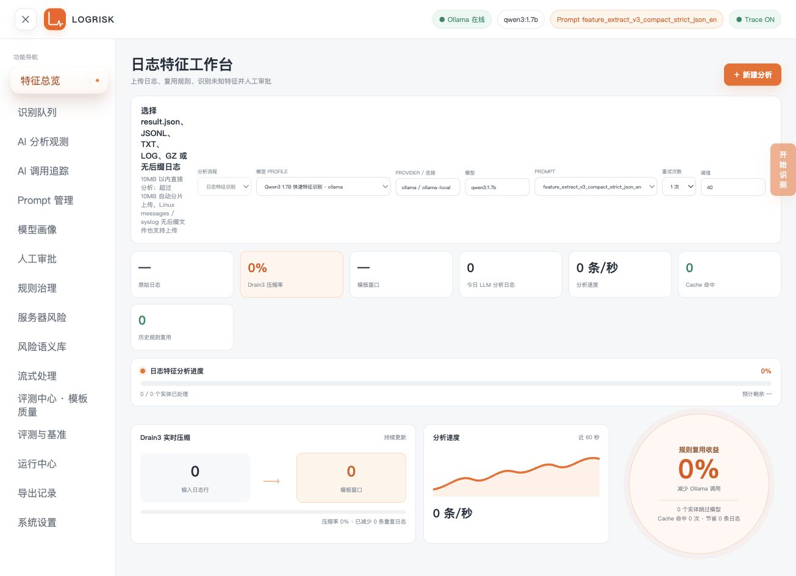
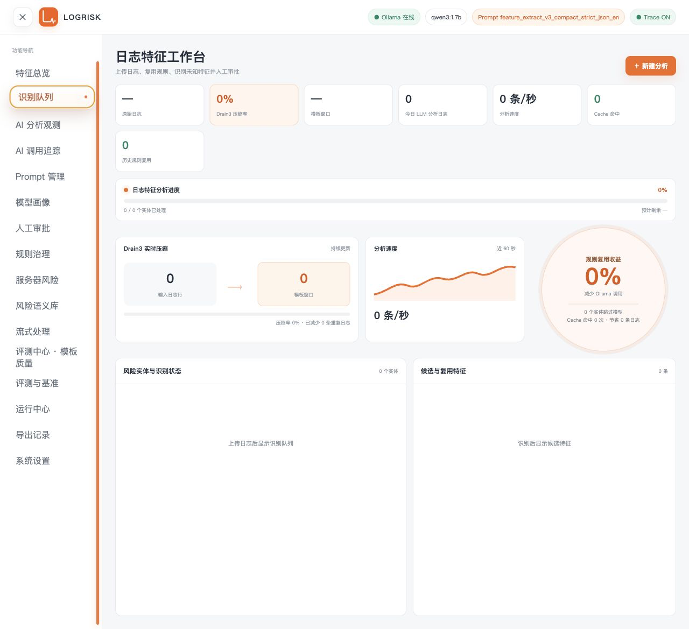
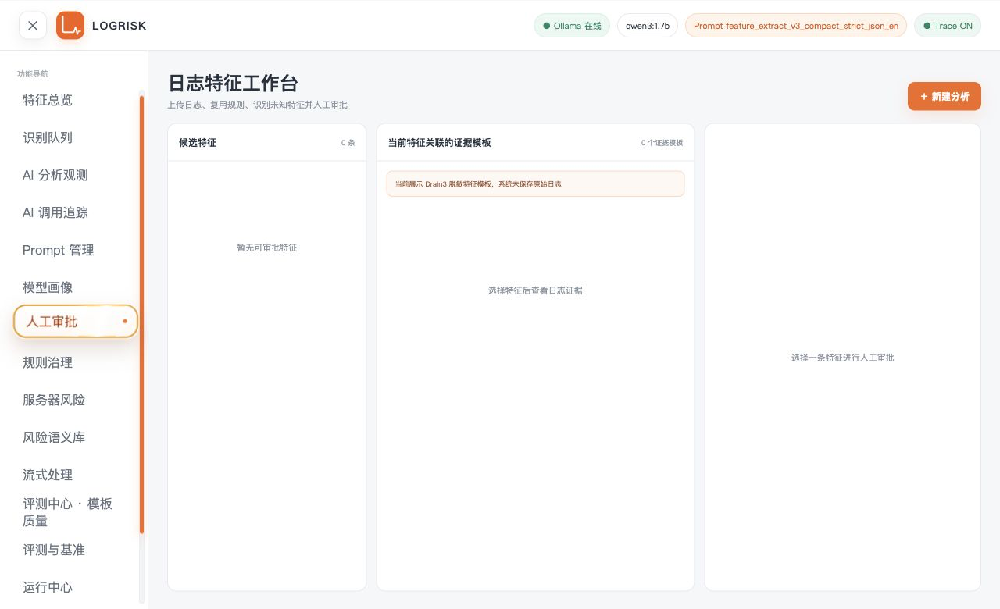
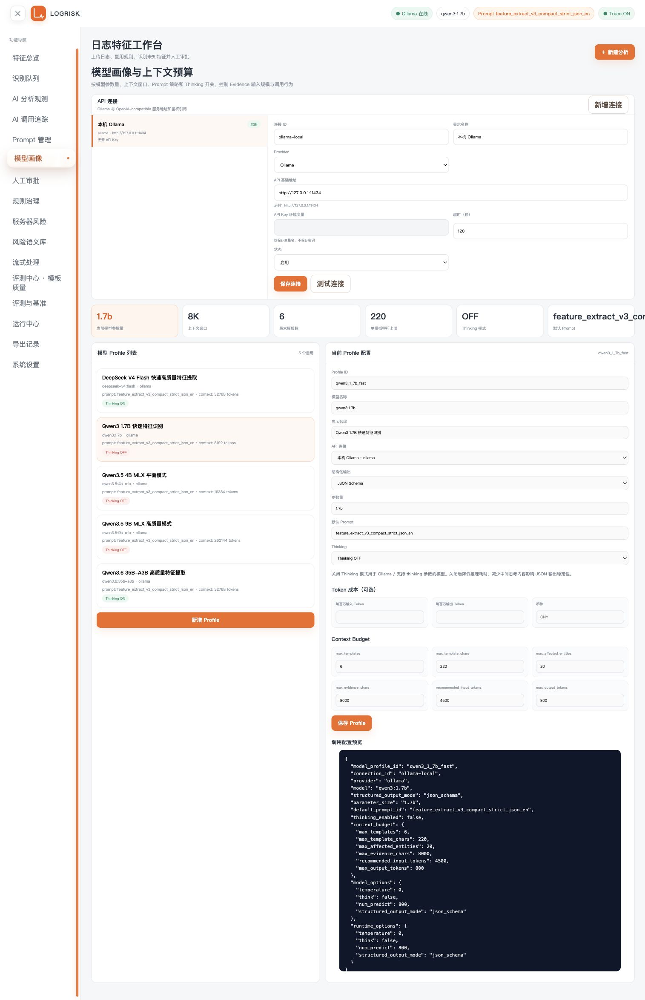
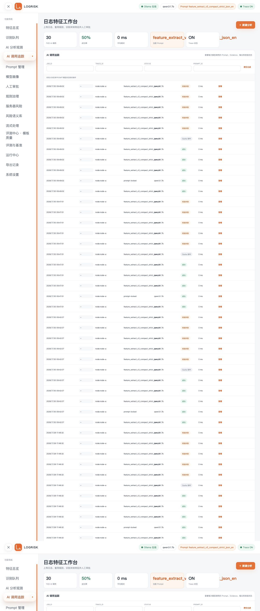
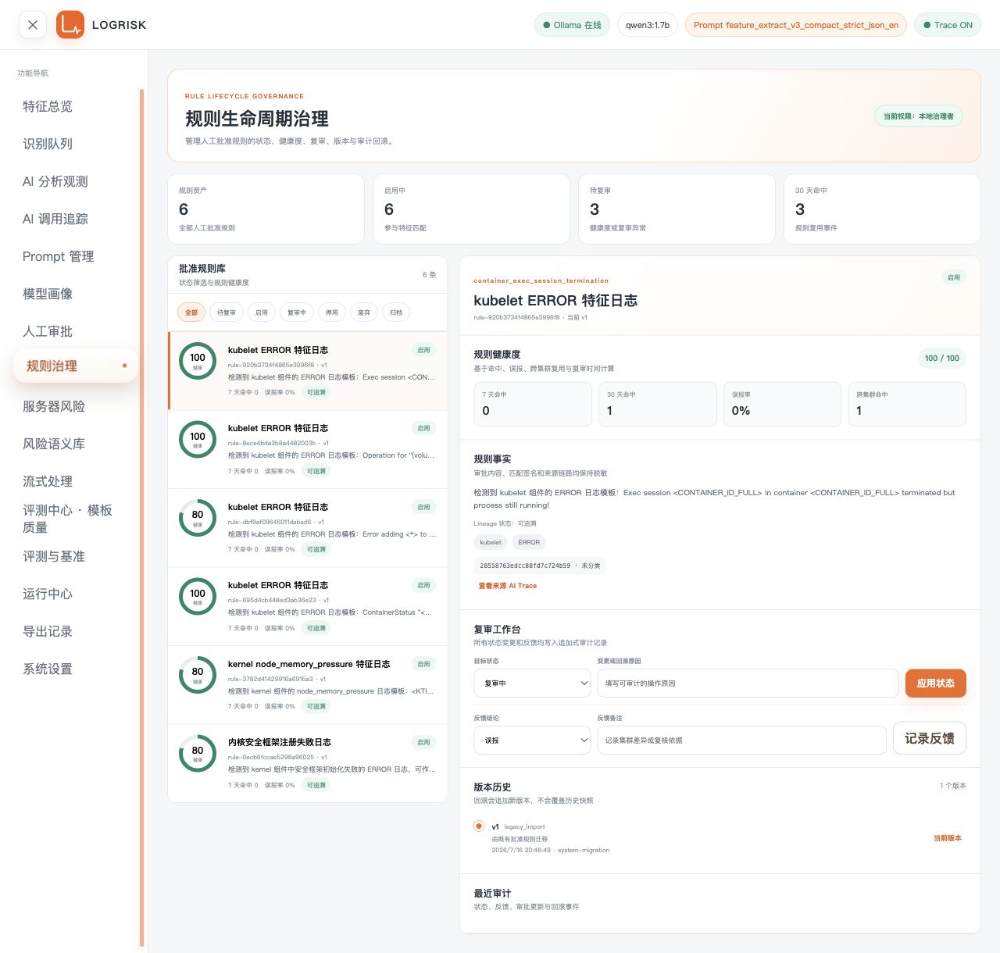
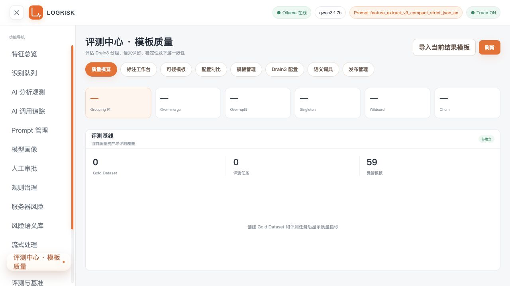
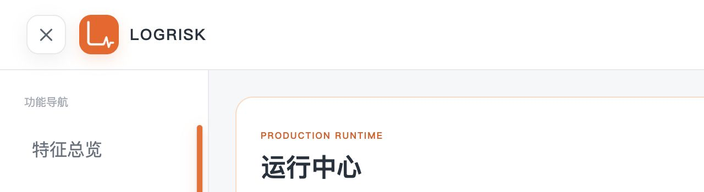

LOGRISK ADMINISTRATOR GUIDE
日志特征分析与审批系统
完整管理员使用手册
面向平台管理员、日志分析人员与规则维护人员。从导入日志到人工批准、规则复用、Drain3 治理、模型观测及生产运行，按安全边界完成每一步。
01 / QUICK START
从工作台开始一次安全分析
工作台集中展示上传入口、模型 Profile、Prompt、阈值、重试次数、Drain3 压缩指标和识别进度。
- 打开 Dashboard，确认页头显示的模型连接状态与所选 Prompt；离线或停用连接不能启动需要模型的识别。
- 点击“新建分析”，选择
result.json、JSONL、TXT、LOG、GZ 或无后缀 Linux 日志文件。超过 10 MB 的文件会自动分片上传。 - 选择启用的模型 Profile。Profile 会锁定 Provider、连接、模型、Prompt、上下文预算和结构化输出策略。
- 设置风险阈值与重试次数，点击“开始识别”。任务创建后，在识别队列跟踪实体级状态。
使用折叠分组导航与帮助
Dashboard 左侧的折叠分组导航将入口归纳为分析工作台、AI 工程、规则与风险、数据治理和系统；点击分组可展开或收起，切换页面时当前分组会自动展开。右上角“帮助”按钮会在新标签打开本手册，方便在操作过程中查询。

02 / ANALYSIS
日志分析、Drain3 压缩与识别队列
上传后，系统先在本地完成解析、脱敏、Drain3 模板聚合和风险评分，再按风险实体将有限的证据包交给模型。
队列状态的处理方式
- 排队 / 处理中：等待或正在进行本地预处理、模型调用和结构化校验。
- 已完成：候选特征已经生成，进入人工审批。
- 规则复用：命中已批准规则，跳过模型但保留可审计记录。
- 失败：连接、超时或结构化输出校验失败；可在计划重试次数内重试同一 Provider。
template_hashes、tags 或 selection_reason 的候选特征应保持失败或重试状态。
03 / REVIEW & EXPORT
人工审批、规则沉淀与受控导出
模型生成的是候选特征，不是可直接对外使用的结论。审批是将候选转为可复用规则与外部 RCA 证据的唯一入口。
- 在“人工审批”中选择候选特征，先阅读关联的 Drain3 脱敏模板、组件、类别、计数、时间窗口和 Trace 来源。
- 核对标题、摘要和标签。标题和标签以模型输出为主；摘要应同时受模型语义与当前 Drain3 模板约束。
- 填写必要的审批备注。选择“批准并写入规则库”将生成可治理规则；选择“驳回”则保留审批决策但不会导出。
- 进入“导出记录”，只导出已批准特征及其关联的脱敏证据、真实节点元数据和批准规则信息，供人工导入外部 RCA 系统。

04 / AI ENGINEERING
Prompt、模型 Profile、连接、观测与 Trace
AI 工程页面把模型连接、输出约束和调用可观测性分开管理，便于安全排查“模型返回内容不合格”的问题。
新增或修改模型连接
- 在“模型画像”顶部的“API 连接”区域点击“新增连接”，选择 Ollama、OpenAI-compatible 或已注册的扩展适配器。
- 填写服务地址、超时和启用状态。远端连接只填写 API Key 的环境变量名，例如
LOGRISK_REMOTE_API_KEY。 - 点击“测试连接”确认地址、认证引用和模型服务可用；保存后再创建或修改 Profile。
- 为 Profile 选择
JSON Schema、JSON Object或“仅 Prompt 约束”。不支持结构化响应的服务应明确选择兼容模式，而不是自动降级。

如何使用 AI 调用追踪
“AI 调用追踪”按任务、Trace ID、状态和 Prompt 过滤。打开一条 Trace 可核对脱敏 Evidence、发送 Prompt、模型原始输出、解析结果和字段校验错误；它用于判断模型输出是否满足结构化约束，不用于保留原始日志。

AI 分析观测与安全 Replay
“AI 分析观测”按 Observation、Span 和阶段展示输入准备、Drain3、规则复用、Evidence、模型、解析、校验、Evaluator、候选和审批链路，并提供延迟、成功率、Token 和可选成本汇总。
- 结果 Replay：复用历史脱敏快照重新展示既有结果，不调用模型，也不会修改候选、规则或审批资产。
- 模型 Replay：必须人工确认，且锁定历史 Prompt、Profile、Provider、Evidence 与模型参数；它独立于正式审批链路。
05 / GOVERNANCE
规则治理、服务器风险与风险语义库
审批后的规则可被复用，风险语义决定模板的业务化解释，节点风险将稳定语义汇总为节点维度的风险事件。
- 批准一条候选特征后，在“规则治理”确认规则状态为启用，并关注近 30 天命中和待复审信号。
- 在“服务器风险”按集群、风险等级和节点筛选；节点名来自输入日志解析字段，而不是写死的示例名。
- 在“风险语义库”选择内置规则后创建覆盖草稿，修改语义字段、分类和标签；验证通过后再发布。
- 语义规则改动只影响后续匹配；历史风险事件保留产生时使用的语义版本，便于审计。

06 / MULTI-SOURCE CORRELATION
多来源关联与规则管理
“多来源关联”工作区只把同一集群内、具有明确实体标识的脱敏模板放入时间线；它帮助人工查看证据链，不会生成 RCA 结论。
source_pairs 定义允许的来源两两组合，例如 kernel ↔ kubelet。来源名称按小写规范化，不支持同一来源与自身或重复组合。如何调整一条关联规则
- 打开“多来源关联”，在“关联规则编辑”中选择要维护的规则；先阅读规则 ID、当前版本与状态。
- 可启用或停用规则，并逐行新增、删除或修改来源组合。停用后，后续观察不会用此规则生成新的跨来源证据链；历史链路保留原规则版本。
- 设置时间窗口、最低风险分、最低出现次数和置信度。只使用业务已确认的数值，避免把不相干的来源或低风险噪声放进关联范围。
- 点击“保存规则”。保存成功后页面会刷新为新版本；若提示版本冲突，先刷新并基于最新规则重新调整。
07 / DRAIN3 & EVALUATION
Drain3 模板、脱敏规则与评测基准
Drain3 的职责是将大量日志压缩为稳定、脱敏的模板；评测中心负责比较模板质量和配置效果，不会自动修改生产配置。
- 模板管理：搜索、筛选、编辑、合并、忽略、软删除和回滚受管模板；所有操作保留审计信息。
- Drain3 配置：以
drain3_recommended.ini基线创建候选版本，调整算法参数与脱敏规则，并关联评测运行。 - 语义词典：从日志中提取 errno、HTTP 状态码、signal 等 Typed Mask；自定义规则扩展内置规则，而非覆盖它们。
- 评测与基准：用 Gold Dataset、Case、Suite、Run 与 Gate 比较 Prompt、模型、模板配置和稳定性。
- 导入当前结果中的脱敏模板，再在“标注工作台”确认模板的分组语义和有效内容。
- 复制基线为候选 Drain3 配置，保存新版本并执行配置校验或评测。
- 在“配置对比”核对相似度阈值、树深度、最大子节点、数值参数化和额外分隔符差异。
- 仅在评测证据充分且人工确认后发布候选配置；必要时从版本历史回滚。

08 / STREAMING & LARGE FILES
大文件与流式处理
大文件先分片上传，本地并行预处理后再合并确定性 Drain3 结果。流式入口采用受注册的内部适配器契约，不会自动连接 Kafka 或持久化原始记录。
- 对于超过 10 MB 的文件，使用工作台上传入口；页面会显示分片数、上传进度、已解析记录数和 Drain3 分区进度。
- 等待所有分片提交完成后再启动特征识别。文件替换、Drain3 配置变化或 Checkpoint 不一致时，恢复会被安全停止。
- 在“流式处理”查看文件来源、已提交 Checkpoint、未知模板队列和人工治理入口。
- 若要接入 Kafka 或私有消息系统，只实现并注册内部适配器；不得把 Broker 地址、Token、消费者或原始消息写入当前通用前端流程。
09 / PRODUCTION RUNTIME
运行中心、发布就绪、外部身份与数据库运行模式
运行中心是生产管理员的只读总览与受控维护入口；“发布就绪”在发布前汇总确定性检查。两者都不会读取原始日志或执行 RCA。
- 打开“运行中心”，确认就绪状态为
Ready，并检查数据库、迁移、状态/输出目录和配额状态。 - 进入“发布就绪”，填写将要发布的版本并点击“执行发布校验”。该操作只检查当前状态，不调用模型、不迁移数据库、不修改配置或自动发布。
- 检查结果为
blocked时先修复阻断项；为warning时记录人工复核结论。可使用“复制诊断信息”提供不含敏感内容的排障摘要。 - 调整 Retention 前先点击“预览清理”，审核候选数量和大小；确认无误后才可执行清理。
- 查看审计日志中的操作者、Request ID、资源、结果和时间。审计不保存 Token、Cookie、API Key 或原始日志。
- 切换到 PostgreSQL 前按部署文档配置
LOGRISK_DATABASE_PROVIDER=postgres与LOGRISK_DATABASE_URL，运行离线迁移及核验，再重启服务。

10 / FAQ & CHECKLIST
常见问题与管理员检查单
先定位、再处理。不要通过关闭结构化校验、改写历史 Trace 或强制导出候选特征来绕过系统边界。
模型返回 Markdown 或字段不完整，为什么候选被拦截？
系统兼容纯 JSON 与 Markdown fenced JSON 的解析，但随后仍会校验每个特征的必填字段、模板 Hash、组件、标签和选择理由。缺字段说明模型没有满足契约；检查 Prompt、输出 Token 上限、Profile 的结构化模式和该 Trace 的脱敏 Evidence。
为什么已批准规则不再调用模型？
这是规则复用收益。已批准规则代表人工确认过的可复用模式；命中时系统保留实体和指标记录，但跳过 LLM，避免把同类证据反复交给模型。
导出为空或缺少节点信息怎么办？
只有已批准特征可导出。节点信息来自与批准特征关联的 entity_type=node 实体；未批准、低风险跳过或未解析到节点的记录不会进入 approved_risk_nodes。
远端模型或扩展适配器如何安全接入？
使用 API 连接或已注册扩展 Provider 合同。密钥放入环境变量；Profile 固定连接和输出策略；任务重试始终使用同一 Provider，不会自动回退到其他模型。
运行中心显示未就绪、发布校验被阻断或无权限怎么办？
先检查 Dashboard 健康与就绪接口、数据库迁移、状态目录可写性和配额。发布就绪会将失败归为具体检查项；它不提供自动修复。生产环境还需由可信代理注入 PACAS/RBAC 身份头；不要在前端或本地数据库模拟生产凭据。
每次上线前检查
- 连接测试通过，API Key 只存在于环境变量。
- 模型 Profile、Prompt 和 Drain3 配置均为明确版本。
- 上传数据的处理范围符合本地存储和保留政策。
- 候选特征已经人工审批；未批准项不会导出。
- 评测结果支持本次 Drain3 / 语义 / Prompt 变更。
- 运行中心 Ready，存储配额未超过硬限制。
- 发布就绪中心的最新校验没有
blocked项，所有warning已完成人工复核。 - 生产写操作由外部 PACAS/RBAC 边界授权。
- SQLite → PostgreSQL 迁移已在停机窗口完成核验。